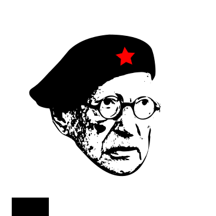

"In der Ära der Selbstdarstellung ist der Schutz der Privatsphäre ein revolutionärer Akt"
Technologie = Technik + Ideologie
In der naiven Hoffnung dass der technologische Wandel unsere Zukunft nicht in einer der vielen Dystopien enden lässt, streben wir eine herrschaftsfreie Gesellschaft an. Wissen sollte frei und Kommunikation für alle unzensiert, unüberwacht sowie anonym zugänglich sein. Im Kampf um die (digitale) Selbstbestimmung versuchen wir Wissen weiterzugeben und üben uns in einem souveränen Umgang mit Technik(en).